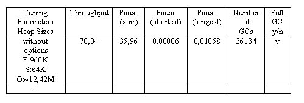
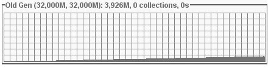

Profile the garbage collector and tune it in order to reduce the pause times caused by the garbage collector.
In this lab you are asked to analyze an application's garbage collector using the tools GCViewer, VisualGC, and the GC trace output, if necessary. You have the opportunity to tune the garbage collector and check the results of your tuning attempts. The goal is to reduce the duration of the application’s longest GC pause.
GCTuning
In this lab you are asked to analyze an application's garbage collector using the tools GCViewer, VisualGC, and the GC trace output, if necessary. You have the opportunity to tune the garbage collector and check the results of your tuning attempts. The goal is to reduce the duration of the application’s longest GC pause.The program used for this activity is the same synthetic program that you used in the previous activity. It periodically allocates chunks of memory from the heap and releases them again. It runs for two minutes with a steady allocation rate. On platforms with a slow CPU it might run longer, especially in its original form before you started tuning the garbage collector.
Follow the instructions. Use the same table as before to keep track of the different tuning approaches and their respective results.

A template of this table is available as an Excel file in the skeleton directory`s subdirectory data.You can retrieve the figures needed for filling in the table from GCViewer (throughput, pause times) and VisualGC (number of GCs, size of eden, survivor spaces, old generation, full gc). “E”, “S” and “O” stand for “Eden”, “Survivors” and “Old Generation”. A look into the trace output file (usually named gc.log.txt) provides the information whether a full GC happened or not. Look for the string “Full GC”, or for “(concurrent mode failure)” if you use the CMS collector.
Important Note:
Running the tools during the test execution might lead to unnaturally
long ‘longest pauses’, especially with weak or single core CPUs. If
you observe any such effect on your test system, consider using two test
runs: one to retrieve information from GCViewer and one without concurrent
execution of the tools to retrieve the values from the trace output via
VisualGC.
The synthetic test program runs for only 2 minutes. What happens if we consider a server application that runs 7/24?
VisualGC shows us that out test program’s heap usage in the old generation steadily increases:

The diagram shows the entire execution time of 2 minutes; the green grid represents the old generation. If we had a server application, that ran 7/24, it would be only a matter of time until a full garbage collection would occur. Considering the increasing memory consumption, we can tell that there would be a full collection roughly every 20 minutes or less.
On the other hand the increase rate is low. We also know that the test program frees all its memory (at the latest after five minutes). Hence there is a good chance that using CMS (concurrent mark and sweep garbage collector) for the old generation would allow a 7/24-application to run with relatively short ‘longest pauses’.
Use the options –Xms64m –Xmx64m –XX:NewRatio=1 (under the assumption that it triggered a full collection) and -XX:+UseConcMarkSweepGC.
Note, with some systems the JVM ignores the NewRatio=1. Check with VisualGC if NewRatio=1 works. If not, use –Xmn32m instead of –XX:NewRatio=1.
What is the result of this tuning? Can you avoid full collections with this configuration?
Note that with the CMS collector you cannot use VisualGC any more to determine if a full collection has occurred. The old generation collection counter in VisualGC shows the total of all CMS and full collections. You have to look into the trace output file and must check whether it contains ‘Full GC’.
How do the values for ‘longest pause’ and ‘throughput’ compare to those that we got in the previous lab without CMS (but with the same heap size configuration of 64MB and NewRatio=1)?
Determine if the longest pause stems from a minor collection or a full garbage collection, which occurred because CMS could not handle the old generation by itself.
How do the tunings for throughput and minimum pause differ? How do the corresponding results differ?
How was the throughput, when you tuned for minimum pause times and the minimum pause times when you tuned for throughput? What is a good compromise?